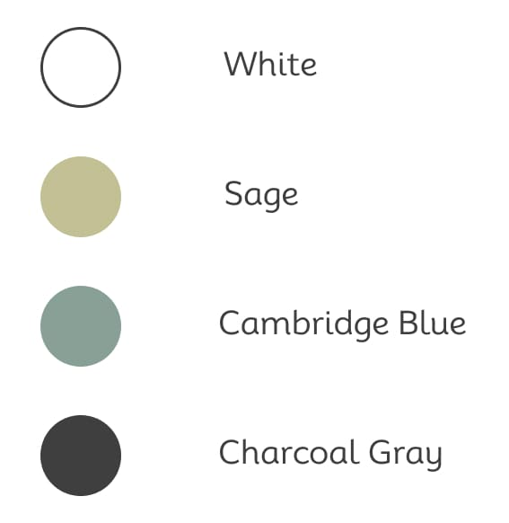
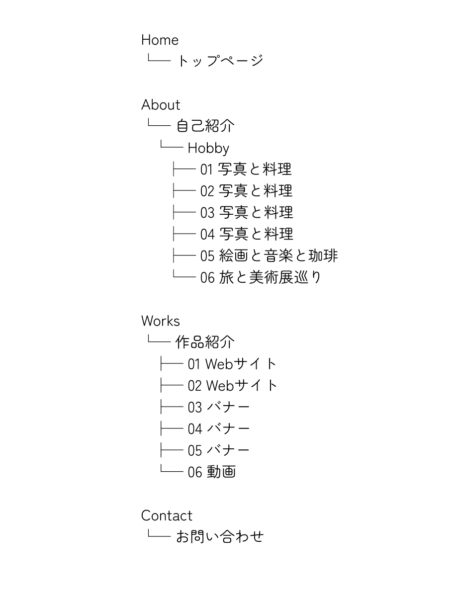

Hitomi Okabe Portfolio
less is more...
About
About me
はじめまして。岡部瞳です。
作業療法士として医療現場に携わった経験から、相手の気持ちに寄り添う視点を大切にしてきました。
その経験を活かし、昨年は公共職業訓練校にてグラッフィックデザインやWebデザインを学びながら制作に励んでいました。
建築や絵画や写真にも興味があり、日頃からユーザー目線で情報収集を行っています。
Skill

Language
HTML5 / CSS3 / JavaScript(基礎)
Qualification
Webクリエイター能力認定試験エキスパート
Site Color
ナチュラル × ミニマルに
Concept
飾り気なく、自然体のままのわたしを見てほしい。
そんな想いを軸に、日常の延長にある “少ないほど豊か（less is more）” を表現しました。
Design Intent
全体は優しい Sage と透明感のある Cambridge Blue を中心に、落ち着いた空気の中に静かな個性が浮かび上がるように設計しています。
背景の Whiteは余白の美しさを際立たせ、アクセントの Charcoal Gray が情報に確かな芯を与えています。
飾らず、そっと寄り添うような色を選ぶことで、私の等身大の魅力が自然と伝わる構成にしました。
Logo
Concept
飾らない、自然体の透明感
Design Intent
このロゴは「等身大のわたし」をそのまま届ける思いを、Ｏの形で表現しています。
円は「余白・穏やかさ・やわらかさ」を象徴し、線の細さと軽やかな傾きで、自然体でありながら洗練された印象に仕上げました。
余計な装飾をそぎ落とすことで less is more の美学を具現化。
見た人に、優しさや透明感、静かな上品さを直感的に感じてもらえるデザインです。
Site Map
Works
Works


Contact
Thank you for watching
Instagram DM